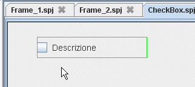
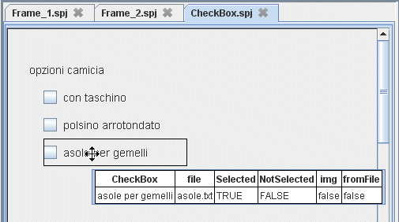
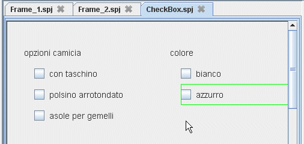
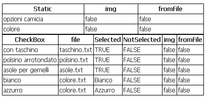

Input da CheckBoxSpesso puo' essere utile selezionare o deselezionare un'opzione che determinarà un diverso comportamento del nostro progetto. Questo può essre ottenuto attraverso un componente che in quasi tutti i linguaggi di programmazione viene detto checkbox. Per mostrare come si usa, faremo riferimento all'esempio HelloWorld. Realizziamo un nuovo frame che chiameremo CheckBox. Cliccare sul menu "CheckBox"
nella sezione "Inserimento Dati" (1), poi
portarsi con il mouse sul Frame (2), e cliccare per
inserire il Componente (3).
|
(3)  |
La finestra ora inserita deve essere configurata per salvare il contenuto in un file. |
Proprietà CheckBox (inserimento dati)
|
 |
Qui al lato abbimo usato tre diversi CheckBox che fanno riferimento a tre diversi file. Taschino.txt, polsino.txt, asole.txt. In questo modo tutte le volte che si flegga una delle opzioni, nel file relativo andra scritto il valore TRUE o FALSE.Sarà possibile selezionare tutte le opzioni o solo alcune. Le selezioni sono indipendenti.
|
A volte è necessario che le selezioni siano dipendenti come nel caso del colore. In questo caso se selezioniamo bianco automaticamente deve essere deselezionato azzurro e viceversa. Per ottenere questo comportamento useremo lo stesso file per memorizzare lo stato del CheckBox. In tale file scriveremo FALSE in entrambi i casi in cui i checkbox non sono selezionati, mentre scriveremo bianco o azzurro nel caso di selezione di bianco o azzurro. Così facendo i due checkbox avranno il tipico comportamento dei RadioButton. |
 |
Qui di seguito è riportata la configurazione di tutti i checkbox inseriti nel frame CheckBox  |